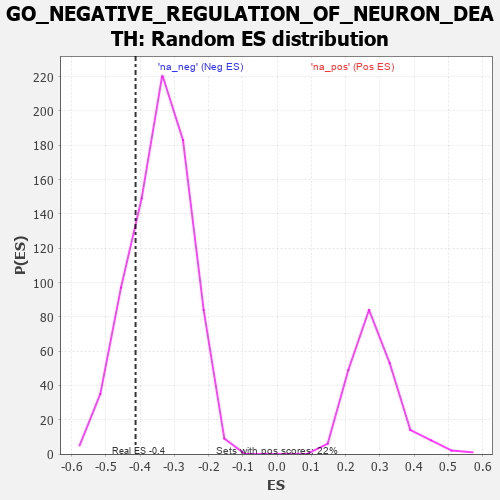

| | | Dataset | 7d |
| Phenotype | NoPhenotypeAvailable |
| Upregulated in class | na_neg |
| GeneSet | GO_NEGATIVE_REGULATION_OF_NEURON_DEATH |
| Enrichment Score (ES) | -0.41352445 |
| Normalized Enrichment Score (NES) | -1.2080066 |
| Nominal p-value | 0.20561941 |
| FDR q-value | 0.61573297 |
| FWER p-Value | 1.0 |
Table: GSEA Results Summary
 Fig 1: Enrichment plot: GO_NEGATIVE_REGULATION_OF_NEURON_DEATH
Fig 1: Enrichment plot: GO_NEGATIVE_REGULATION_OF_NEURON_DEATH
Profile of the Running ES Score & Positions of GeneSet Members on the Rank Ordered List
| PROBE | GENE SYMBOL | GENE_TITLE | RANK IN GENE LIST | RANK METRIC SCORE | RUNNING ES | CORE ENRICHMENT | | 1 | TGFB3 | | | 49 | 2.654 | 0.0917 | No |
| 2 | BAX | | | 387 | 0.711 | 0.0754 | No |
| 3 | LRP1 | | | 470 | 0.648 | 0.0890 | No |
| 4 | HTRA2 | | | 527 | 0.621 | 0.1048 | No |
| 5 | ZPR1 | | | 967 | 0.491 | 0.0676 | No |
| 6 | AKT1 | | | 1040 | 0.476 | 0.0760 | No |
| 7 | MEF2C | | | 1054 | 0.473 | 0.0919 | No |
| 8 | FZD1 | | | 1574 | 0.379 | 0.0404 | No |
| 9 | HYOU1 | | | 1692 | 0.358 | 0.0388 | No |
| 10 | MSH2 | | | 1819 | 0.334 | 0.0352 | No |
| 11 | CREB1 | | | 2243 | 0.269 | -0.0082 | No |
| 12 | REST | | | 2308 | 0.259 | -0.0067 | No |
| 13 | HIPK2 | | | 2389 | 0.247 | -0.0077 | No |
| 14 | TIGAR | | | 3091 | 0.138 | -0.0910 | No |
| 15 | PARP2 | | | 3316 | 0.103 | -0.1155 | No |
| 16 | TLDC2 | | | 3349 | 0.097 | -0.1159 | No |
| 17 | CDK5 | | | 3480 | 0.080 | -0.1294 | No |
| 18 | PIN1 | | | 3543 | 0.069 | -0.1347 | No |
| 19 | CBL | | | 3621 | 0.056 | -0.1423 | No |
| 20 | HSF1 | | | 3718 | 0.039 | -0.1530 | No |
| 21 | VPS35 | | | 3989 | -0.006 | -0.1868 | No |
| 22 | CSF1 | | | 4074 | -0.019 | -0.1967 | No |
| 23 | AP2B1 | | | 4185 | -0.039 | -0.2091 | No |
| 24 | NRBP2 | | | 4274 | -0.055 | -0.2182 | No |
| 25 | LRRK2 | | | 4467 | -0.087 | -0.2392 | No |
| 26 | ILK | | | 4510 | -0.096 | -0.2410 | No |
| 27 | NTRK2 | | | 4543 | -0.104 | -0.2412 | No |
| 28 | TERT | | | 4801 | -0.157 | -0.2678 | No |
| 29 | PDPK1 | | | 5043 | -0.207 | -0.2905 | No |
| 30 | ITSN1 | | | 5094 | -0.222 | -0.2887 | No |
| 31 | GRIN1 | | | 5381 | -0.291 | -0.3140 | No |
| 32 | ATG7 | | | 5858 | -0.420 | -0.3585 | No |
| 33 | SET | | | 5895 | -0.434 | -0.3471 | No |
| 34 | PPT1 | | | 6038 | -0.485 | -0.3471 | No |
| 35 | ROCK1 | | | 6152 | -0.520 | -0.3422 | No |
| 36 | CLN3 | | | 6580 | -0.699 | -0.3702 | No |
| 37 | GSK3B | | | 6719 | -0.768 | -0.3593 | No |
| 38 | TOX3 | | | 7150 | -1.033 | -0.3754 | Yes |
| 39 | GRN | | | 7319 | -1.194 | -0.3525 | Yes |
| 40 | GRIK2 | | | 7552 | -1.471 | -0.3275 | Yes |
| 41 | BOK | | | 7715 | -1.817 | -0.2810 | Yes |
| 42 | TRAF2 | | | 7861 | -2.481 | -0.2077 | Yes |
| 43 | FYN | | | 7881 | -2.622 | -0.1134 | Yes |
| 44 | ARRB1 | | | 7935 | -3.377 | 0.0045 | Yes |
Table: GSEA details [plain text format]

Fig 2: GO_NEGATIVE_REGULATION_OF_NEURON_DEATH: Random ES distribution
Gene set null distribution of ES for GO_NEGATIVE_REGULATION_OF_NEURON_DEATH